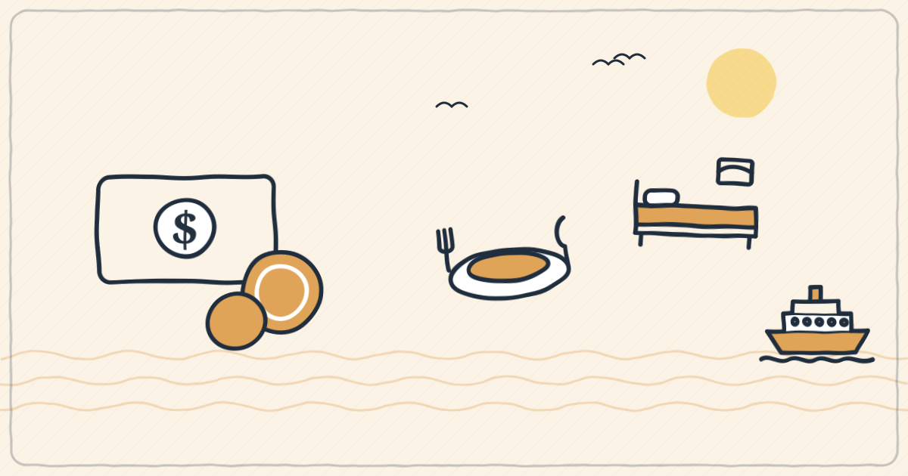

Cruise Gratuities for Canadians: Prepay or Pay On Board?

Most big lines add US$17–20 a person a day in automatic gratuities, about C$24–28, and more in suites. For Canadians the sensible move is to prepay them on the same invoice as the fare, in Canadian dollars where the line offers it, so the amount is fixed and the exchange rate and card fees stop applying.
Expect US$17–20 a person a day in automatic gratuities on the mainstream lines, roughly C$24–28, charged to the onboard account every night unless you paid them earlier. The Canadian answer to "prepay or not" is prepay, and in Canadian dollars when the line offers it: the rate is locked, the exchange rate stops mattering, and the last-morning bill shrinks to drinks and photos.
What does each cruise line charge in daily gratuities?
Every line sets a flat daily amount per guest, a little higher for suites, and a separate percentage on bar, spa and specialty-dining bills. The figures below are per person per day in US dollars at the rates published in 2026; several lines raised them this year, so confirm yours before final payment.
- Royal Caribbean: US$18.50; US$21 in suites; 18% on drinks and spa.
- Carnival: US$17; US$19 in suites; 20% on drinks.
- Norwegian: US$20; US$25 in the Haven and suites; 20% on drinks, spa and specialty dining.
- Princess: US$18; US$19 mini-suites; US$20 suites; 20% on drinks, dining and spa.
- Celebrity: US$18; US$19 Concierge and AquaClass; US$23 in the Retreat; 20%.
- Holland America: US$18; US$20 in suites; 20%.
- MSC, Caribbean and Alaska sailings: US$17; US$23 in the Yacht Club; 18% on bar bills.
- Disney: US$16 for every guest; US$27.25 in concierge; 18% on drinks and spa.
The names vary. Holland America and Princess call it crew appreciation, Norwegian a daily service charge, MSC a hotel service charge. It is the same thing: a pooled payment shared between dining staff, cabin stewards and the people you never see in the galley and laundry, and a real part of how they are paid.
Why do gratuities cost Canadians more than the sticker suggests?
Because the sticker is in US dollars and your card is not. Americans see US$259 and pay US$259. A Canadian sees the same line, then the bank converts it at its own rate and, on most cards, adds about 2.5%, on top of a fare, a drink package and excursions that all went through the same conversion.
The second cost is timing. Gratuities left unpaid until the cruise convert at whatever the dollar is doing that week, which is one more floating number in a budget you set months earlier. The lines also reserve the right to raise the daily charge for anyone who has not yet paid it, and 2026 had several rises; what can and cannot go up after you book covers the contract wording. Prepaying removes both problems at once.
Can you prepay cruise gratuities in Canadian dollars?
On a Canadian-dollar booking, usually yes. Royal Caribbean, Celebrity, Carnival, Princess and Holland America all sell to Canadians in CAD, and prepaid gratuities added to that booking are invoiced in the same currency at the rate the line is using that day. From then on the figure is fixed: a rate rise before you sail does not reach you, and a weaker loonie at final payment does not either.
On a US-dollar booking you can still prepay, and it still locks the daily rate, but the card conversion happens on the day you pay rather than on board. Either way, keep every payment in the booking's own currency; mixing them is where double conversions creep in, as explained in whether to pay for a cruise in CAD or USD.
- Ask for gratuities to be added at booking, or any time before final payment; most lines also allow it through the app up to a day or two before sailing.
- Check the invoice shows the total for every guest in the cabin, children included, in the booking currency.
- Keep the confirmation. If you cancel inside the penalty window, prepaid gratuities are normally refunded in full, though a USD refund converts back at the rate on the refund day.
Do children pay gratuities on a cruise?
On most lines, yes, at the adult rate from the first night, which is why a family cabin's gratuities can pass C$700 for a week. The exceptions are narrow: MSC does not charge guests under 2, Norwegian starts at age 3, and Carnival exempts children under 2. Disney charges every guest, infants included. Check your line before assuming a toddler travels free of it.
Group bookings are charged per person too, so a reunion of eight cabins is paying gratuities for sixteen or more people; the group coordinator should confirm whether the block rate has them included, as discussed in how group cruise bookings of eight cabins work.
Which fares already include gratuities?
A few, and the list changes. Princess Plus and Princess Premier fold crew appreciation into the package price, so there is nothing more to pay on board. Virgin Voyages prices tips into the fare. Holland America's standard Have It All package does not include them, and Celebrity's All Included dropped gratuities at the end of 2023, so neither should be assumed.
Separately, "free gratuities" turns up as a booking promotion during sale periods, worth a few hundred dollars on a family cabin. The promotion stays attached to your booking even if the line withdraws it for later bookers, as long as you do not ask to be moved to a different offer.
Who still gets a cash tip, and in which currency?
The daily charge covers the ship. A few people outside it expect something in hand.
- Porters at the terminal. US$1–2 a bag in Florida, Galveston or Seattle. At Canada Place, Canadian dollars are the natural currency.
- Room service. A couple of dollars per delivery where no delivery fee is added.
- Tour guides and drivers. A few dollars a person for a half-day tour, more for a full day or a private guide.
- A standout crew member. An envelope on the last night, on top of the pool, for someone who went beyond the job.
Bring US ones and fives from home for US ports and for the ship. Canadian twenties are awkward for crew to use or exchange on a US-homeported ship, and the bar and spa bills already carry their 18–20%, so there is no need to add to those.
Can you adjust or remove automatic gratuities?
On most lines, yes, at guest services, and the right way to do it is as a last step after a complaint that was not fixed. Removing the charge and handing cash to your steward instead rewards one person and takes money from the dining and galley teams who shared the work. Norwegian is the exception: its daily service charge cannot be changed at the desk, and complaints go through a form after the cruise.
For the loonie question specifically, the lever is prepaying, not removing. Shrink the floating US-dollar part of the bill and the exchange rate matters much less; how the exchange rate changes a cruise budget works through the rest of it.
Want this checked for your own sailing? A licensed cruise consultant can price it up and answer questions for free, with no obligation.
Ask a cruise expert →The Canadian gratuity plan
Budget US$17–20 a day per person, call it C$24–28, for every guest in the cabin. Prepay it on the same invoice as the fare, in Canadian dollars where the line offers that, the week you book or the week a rise is announced. Register a no-foreign-fee card for the rest, and pack a few US ones and fives for porters and guides. Then forget about it and enjoy the ship.
Questions people also ask
How much are cruise gratuities in Canadian dollars?
At recent rates, US$17–20 a day works out to roughly C$24–28 a person. For a couple on a seven-night cruise that is about C$330–390, and a family of four pays double. Suites cost US$2–7 a day more on most lines.
Can Canadians prepay cruise gratuities in Canadian dollars?
Usually, yes, when the booking itself is in Canadian dollars. The gratuities go on the invoice at the rate on the day, and that figure does not change if the line raises its daily charge or the loonie slips before you sail. Ask the agent or check the payment page before final payment.
Is it rude to remove gratuities on a cruise?
It takes money from cabin stewards, waiters and the galley and laundry teams who share the pool, so treat it as a last resort for a real service failure you have already reported. Norwegian does not let you change the charge at the desk at all.